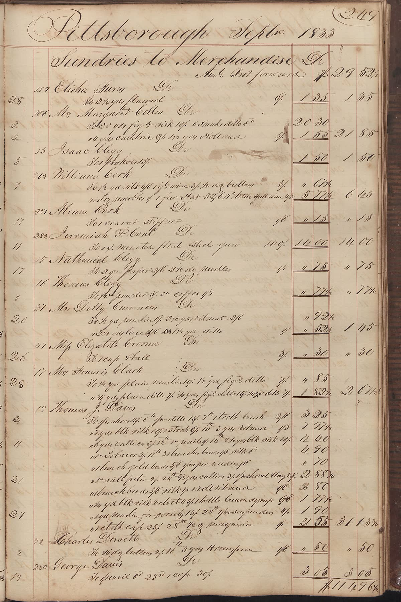
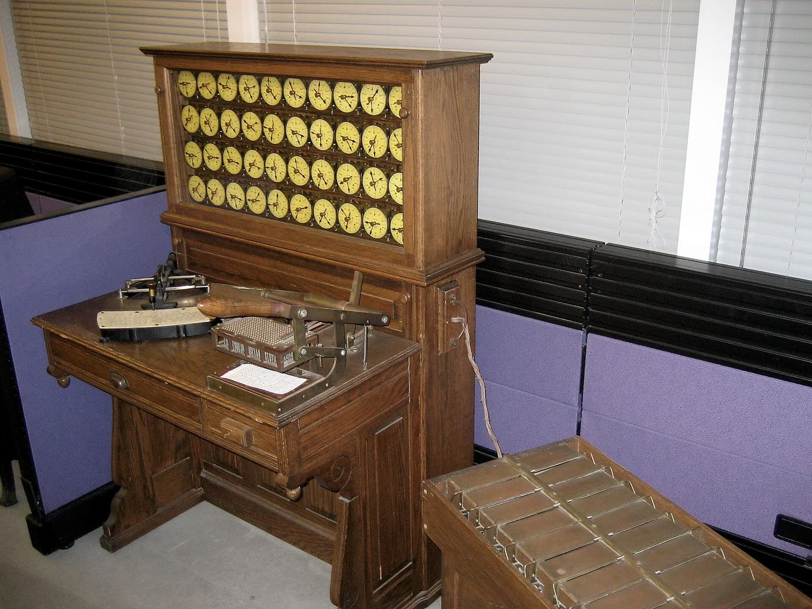

How it works, and what broke
Three rules
- Rules calculate.Amounts, dates, differences and every rule decision stay in deterministic code that can be tested.
- Evidence stays attached.Each exception carries the rows and fields that raised it. A model may explain them; it cites only fields that exist.
- People release.High-severity exceptions block release until a person decides. An override needs a written reason, kept in the log.
One exception, start to finish
PAY-EX-014
Row 17 · payroll register
sha256 9f2c…e1a0 · 30 rows
First the files land and are fingerprinted.
Inactive employee paid
Term 30 Sep · paid 4,125.00
Severity high · blocks release
Then a rule fires and keeps its evidence.
Inactive employee paid
Brief: hold, confirm leaving date
2 citations · validated
A model explains it. It never sets the amount.
Held by the reviewer
Decision by reviewer · 14:02
Reason: “confirmed with People”
A person decides, and the log keeps why.
Scored, not claimed
Run Replay's payroll engine, the prototype Tickmark grew from: clear errors, boundary cases that must stay silent, injection notes, and stress cases written to break the rules. Tickmark's rewritten engine has its own 25 unit tests; these 74 cases have not been re-run on it yet.
74
test cases. 73 pass on Run Replay engine 2.1.0; the one miss is left open on purpose.
Run Replay payroll engine · cases by category
What broke, and what I fixed
Five days to close,
and who checks what
Run day three
Where the data comes from
Real
SEC EDGAR XBRL
Latest 10-K for ADP, Paychex, Workday, Intuit, Apple, Microsoft, JPMorgan Chase and Walmart. Walmart does not tag total liabilities, so the balance-sheet identity cannot be tested from tags alone. Paychex (+16.9%) and Microsoft (+17.8%) cross the 15% revenue threshold.
Real
Bank of Canada
Daily EUR/CAD rates revalue a EUR 250,000 account into JE-1037. 30 September had no published rate, so the September close uses 29 September.
Real
FinQA
1,147 questions on real filings (MIT licence, Chen et al., 2021). The grader reproduces all 1,108 executable gold programs; 39 need table operations. One gold label calls an 82/18 asset allocation a debt-to-equity ratio.
Synthetic
Close, payroll, bank lines
Shaped like NetSuite, Ramp, Numeric, Snowflake, HRIS and payroll exports. The rules run on them in your browser; nothing is a real company or person.

A letter from Martin
The first version of this project showed eight exceptions I had typed in by hand. It looked finished. Nothing in it ran on real input, so nothing in it could be measured.
So I rebuilt it around one rule: amounts, dates and approvals stay in code and with people. A model may explain evidence in plain language, because that is reversible and it is what reviewers lose time on.
My own 66 cases scored 100%. Eight cases written to break it dropped recall to 92.3%. Fixing those taught me more than building the first engine did.
What is missing for production: real NetSuite, Ramp and HRIS connections, single sign-on, four-eyes release in the database, and results from real reviewers. The study is written; recruiting has started.
Martin Zhang
Finance systems and AI evaluation · Toronto
